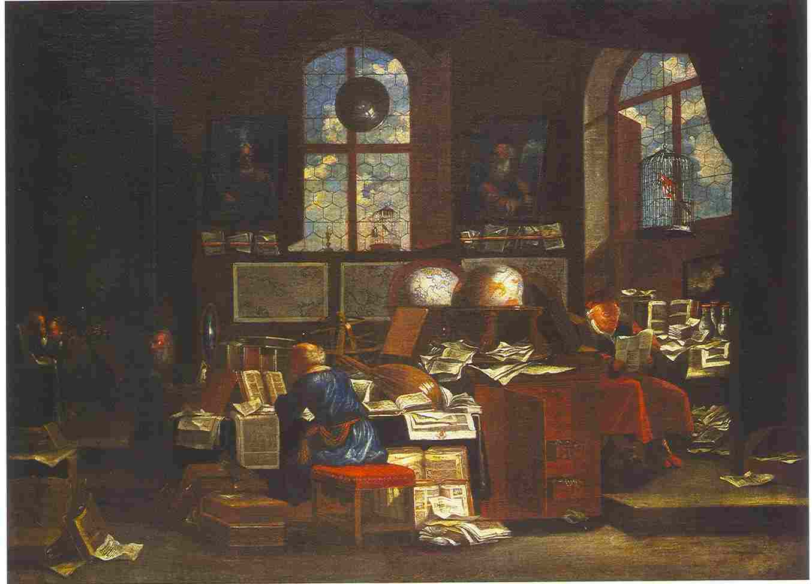
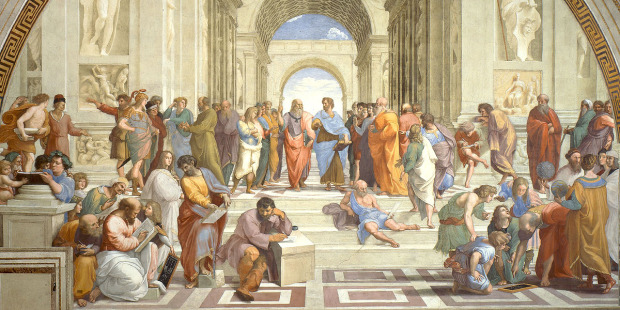

Preface
Why the lotus flower?
The lotus symbolizes purity, enlightenment, rebirth, and spiritual awakening across various cultures, particularly in Buddhism and Hinduism. It grows from muddy waters, yet its pristine bloom represents the journey from darkness to light, symbolizing spiritual growth and enlightenment.
What is Katâlepsāra?
Our current milieu is drowning in information yet starving for knowledge. Remember, knowledge has to be digested. Only then does it become wisdom. Indigestion of information has become a problem. We’re gaining weight and not nutrition.
Katâlepsāra is a portmanteau I made by combining:
- Katâlepsis: a philosophical term referring to the idea of grasping or apprehending something with certainty or conviction, often used in discussions about knowledge and belief.
- Saṃsāra: an eastern philosophical term literally meaning ‘wandering’ or ‘world,’ with the connotation of cyclic, circuitous change.
Katâlepsāra is my personal philosophical framework, deeply influenced by Stoicism, designed to guide action in an increasingly complex and rapidly changing world. It embodies the balance between certainty in knowledge and the cyclical nature of existence. Katâlepsāra represents the journey of transforming raw information into wisdom through discernment and integration, while acknowledging the dynamic, ever-evolving context in which knowledge exists.
Definition: Katâlepsāra—a fusion of certainty in understanding (katâlepsis) and the cyclic nature of existence (saṃsāra), describing the transformative journey from information to wisdom within the context of life’s perpetual cycles.
Given how inundated we are with information, my goal is to make writing more engaging, legible, and accessible to everyone. While my book explores dense concepts, I believe these ideas, though intricate, are ultimately accessible to all. I want to create content that offers a slower form of media, one that really gets your brain working and encourages deep processing. It’s about slowing things down so people can truly reflect on what they’re reading. Reason is not a fast-growing weed, but a slow-growing oak tree. I want to reach a wide audience, so I’m committed to being openly accessible without adopting an elitist perspective. I have big dreams for my website and philosophical system, and I’m excited about making a meaningful impact in this space.
The purpose of this book is to equip you with perspectives for living a good life. Reading this once will not deliver results. The writings must be revisited and reread constantly. Actively engage with the content through your own writing. Consider it your anchor in harbor. While a ship in harbor is safe, that’s not why ships are built. My book was inspired by The Encheiridion, a title that translates to ‘handbook.’ The Encheiridion, compiled by Arrian of Nicomedia, contains the core teachings of Epictetus, serving as a concise manual for applying his philosophy to daily life. Additionally, Meditations by Marcus Aurelius, a deeply personal reflection on Stoic principles and their application to leadership and life, also served as a significant source of my inspiration, shaping this book’s focus on wisdom and self-mastery.
Stoicism calls for a manner of life that is demanding and austere but also modest and unostentatious. Application is light with reservation and without straining. We should approach both simple and profound books with equal willingness. It doesn’t matter who wrote them or how learned the author is—what matters is the truth of what is written. Many years from now, much of what I believe to be true today may turn out to be wrong and perhaps even embarrassingly so. While acknowledging the fallibility of my beliefs, I will strive diligently to uncover the things I might be wrong about right now.

Aleksander Gierymski, Scholar in a Polish Study, 1880. Oil on canvas.
Stop, sit, listen, look, and pay attention: to where you are, who you are, and what you are. Pause for a moment and ask yourself, “What are the undeniably foolish things I’m doing right now that I know are steering me toward the wrong path?” You know but do not confront them. Avoiding stupidity is easier than seeking brilliance. Examine your life so that you can live it for the better in the moment. Identify, remediate, and reconcile your under-acknowledged and under-actualized human capacities. To begin, I would like to identify the following as key contributors to declining mental health:
- No accountability, obligations, or commitments
- No foreseeable future and no compelling spirit
- Absence of a schedule
- Dehydration and a diet of malnutrition
- Little to no physical fitness or exercise
- Little to no sunlight, fresh air, or stimulating scents
- Little to no social interaction
- Frequent naps or long amounts of time asleep
- An imbalanced sleep-wake cycle or a lack of sleep
- Late to rise and late to bed
- Alcohol among other intoxicants
- Unachievable expectations and standards
- Unhealthy amounts of distracting internet usage
- Dwelling and ruminating upon the past
- Surroundings are toxic individuals or environments
- Impediments or friction for learning
- Sickness or ailment to the body; feelings of grogginess and lethargy
- Listening to saddening music
If you are experiencing any of these contributors, this book will help you identify and eliminate them. Keep your reservations light and avoid straining yourself. A worthy goal might be to embrace humor about ourselves and the world: to be both laughable and able to laugh. This means don’t take people too seriously—including yourself. After all, if you think about it, everyone is just a marketing campaign for their gametes. Perfection is a Sisyphean pursuit; do not let perfect be the enemy of the good. Improvement requires change, and perfection comes through continual transformation. While many of us believe that holding on gives us strength, sometimes true strength lies in letting go. The choice we face is between enduring the discomfort of change or suffering the stagnation of staying the same. By no means do I intend to dictate moral beliefs onto you. Rather I intend to share the perspectives that have helped me develop into a better person since awareness is the greatest agent for change. However, self-awareness, alone, does not absolve anybody of anything.
You are the story and becoming comfortable with yourself is one of the ideas that I want to get across in this book. In the same way a seed isn’t yet a fully grown tree, but contains within it all the capacity to become one, you are not fully yourself. After all, it is not proper to dictate a figure of which you do not bode with. You won’t find contentment with what you have until you come to terms with who you are. My aim for this book is to expose the faultiness of our thoughts and offer reparative perspectives. With enough compassion and empathy, you will resonate with these perspectives.
The ninth edition of this work reflects a wealth of revisions over 6 years, with each round of edits bringing new insights and refinements. As I continue to read, I will likely add to this and perhaps even shift my perspectives. After all, great reading doesn’t always translate to great writing, and vice versa. Students who excel tend to spend more time in the library, gaining a broader understanding of the literature. This leads to more reading, which in turn means juggling more information. However, reading more doesn’t automatically lead to more ideas. In fact, especially in the beginning, it can mean having fewer ideas to work with, as you realize that many of the ideas you come up with have already been explored by others.
I first felt the strong conviction to write this narrative during Summer 2020. While the exact timing of its release was uncertain, the journey to completion has now been realized. Reflecting on this moment remains a rewarding experience. I am a meticulous person who seeks to strip away any ambiguity. I believe there is a right way to approach every situation, and my aim has always been to craft the best book I am capable of. You, the reader, deserve a clear and thoughtful narrative. The following passage outlines the initial motivation behind this work.

Raphael, The School of Athens, 1509–1511. Fresco.
In Fall 2020, I had been preoccupied in my role as a student, and I failed to consistently upkeep my philosophical thoughts. I found myself so embroiled with my academic studies that I discovered I was drifting from my pursuit of living the good life. Let this be a lesson to detach yourself from the bustle of your role so that you can invest in yourself. I spent two consecutive mornings at the park meditating in my car. In other words, I was contemplating and musing by myself without distraction. I found that we often unscrupulously perform for the future. We have willfully walked onto a treadmill. Result after result, the treadmill churns to the next result. What this creates is a life of obligation and burden, of churning out things just for the sake of churning them out. A life of pointlessness and exhaustion. In order to go up, the rungs of the ladder need to be small steps, otherwise the distance to climb the next rung will be too far. Also, you come to realize that although you’re climbing a ladder, it’s on the wrong wall. When you’re confronted with a 10 foot wall, bring out a 12 foot ladder. I found out that I was doing—not being. Personally, I think this ‘doingness’ is attributed to a result-driven culture where the end justifies the means. We have an idealized accomplishment that we want to achieve, yet it is not where our focus should be. For me, the focus has been getting good grades in order to graduate. These good grades were a byproduct of my high maintenance systems that guaranteed good grades. But good grades don’t actually matter as much as we think. We’ve become intellectual elitists, valuing status and virtue based on the number of degrees one holds rather than the type of person they are or what they can achieve in real-world situations. This had mistakenly been my perspective for the beginning few weeks of the Fall 2020 semester: getting good grades is a measure of being a good person. This is not what my perspective should be. Let me elaborate:
People usually experience the fruits of an outcome. They witness only the harvest and fail to experience the journey towards cultivation. Such is the case since these processes are both lengthy and laborious. We only care to dedicate time towards seeing the results. What I’m saying is that we watch orchestras perform; we don’t watch orchestras practice. Nevertheless, this aspect of practice should not be neglected when we observe the outcome. Little things add up but by no means are they little. Much toil and trouble are unaccounted for by perceivers. We have a false picture about how success happens. We often only see the results and almost never the process of things, so we tend to think that the finished product—a book, being in shape, being wise—is impressive, and therefore the process by which that event was created must have been equally brilliant. In fact, it’s not. All success happens the same way: action by action. Over time actions culminate into something bigger. The outcome did not earn the distinction—the process earned the distinction which is concealed by the outcome. We overlook the effort and focus on the outcome. This isn’t living—this is being result-driven. We attribute too much of our emotional weight upon things that we don’t even know for certain will actually result. What will happen when you don’t get the results you want?
I think that this sort of perspective creates a negative feedback loop strictly for results which isn’t a practical perspective since we cannot control results. Our lives should be lived in the present moment which is independent of results. Reprehensibly, we may even develop feelings of impatience for not having the results that we want when we want them.
According to Antipater, the ideal Stoic is like an archer who does everything in his power to aim well, but his happiness isn’t dependent on whether he succeeds in hitting the target.
An archer can only influence outcomes. The outcomes cannot be controlled. Our true worth doesn’t reside in whether or not we hit the bullseye. We should not live a life that is dependent upon whether we manage to hit a target or not. A gust of wind may alter the course of your arrow, or an obstruction may impede your arrow from reaching the target. Whatever the case, Fortune and Fate are not up to you. However, your perspective and emotional allocation is up to you. Your emotions are solely your problem. Be conscious and deliberate with how and where you distribute these precious facets of your life.
Existential learning occurs when a person’s life circumstances change in such a way that continuing as before is no longer possible. Pandemics, for instance, can trigger this shift. In such times, don’t cling to the familiar in an attempt to maintain homeostasis, as this resists change. To grow in a healthy way, we must make space for something more sustainable than what we knew before. Just as root-bound plants are limited by their pots, we too can be restricted by old patterns.
Ivan Shishkin, Rain in an Oak Forest, 1891. Oil on canvas.
No matter who you are, we all have 24 hours in a day—168 hours in a week. What will you accomplish with that time? At the end of each day, we are the product of our choices. The number of hours in a day hasn’t changed, but the amount of time we spend online has. I cannot make my days longer, so I strive to make them better. It’s not death that one should fear, but never beginning to live. How many of the posts you recently scrolled through on social media do you even remember? Not many? Were they truly worthwhile? So, was there really much difference between aimlessly scrolling and being a corpse? Make sure your family and loved ones get the best of you, not what’s left of you. We are the product of our choices. The best time to make these decisions was yesterday; the second-best time is now! Don’t expect returns on investments you haven’t made. You cannot withdraw a dollar if you never saved 100 pennies. Don’t waste time deferring things until later. Change your life now—don’t leave it up to chance, act immediately. Don’t count the days—make the days count. Don’t get through the day, get from the day. Don’t go through life, grow through life. We did not come into this world; we came out of it. You may not see the results you want right away, but you can begin the journey today. In doing so, you free yourself, one chain at a time. How can you presently live so that the results can naturally come? Joy has to be found today, not tomorrow. Strive for the day in which confidence assures that there is not a single impression that does not have the moral means to be tolerated. How can you use virtue here and now?
Bear and forbear.
Endure and renounce.
Persist and resist.
Those with strong, resilient minds are set apart by permanence, perseverance, and persistence. They remain steady in the face of obstacles, discouragement, and seemingly impossible circumstances. Just as important is the practice of premeditatio malorum which is anticipating setbacks and preparing for the worst. Together, these qualities prevent them from faltering under pressure. This outlook echoes Murphy’s or Sod’s Law, where things tend to go wrong, but you prepare for it regardless.
Going back to my Fall 2020 semester dilemma, I thought that if I got good grades, then I would graduate. To an extent this is true. However, if I am a good person, the results would follow. The result of graduating does not decide if I am a good person. Essentially, I had the concept mistakenly reversed:
Results → Good Person
This implies that achieving good results makes you a good person. Instead it is that:
Good Person → Results
You can control being a good person, so soon thereafter the results will follow. Focus on what you can control and react with indifference to all that lies beyond your sphere of control. You cannot control results so do not live for the results. Instead, live for yourself. The results will follow on their own accord, not on your accord. Life is 10% what happens to you and 90% how you react.